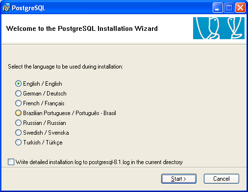
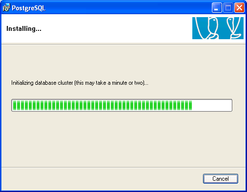
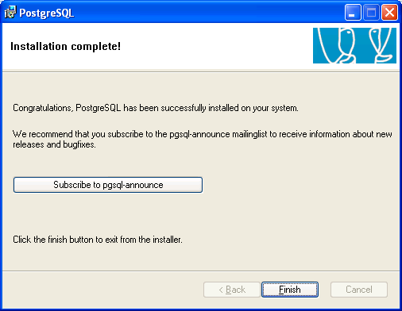

./configure
gmake
su
gmake install
adduser postgres
mkdir /usr/local/pgsql/data
chown postgres /usr/local/pgsql/data
su - postgres
/usr/local/pgsql/bin/initdb -D /usr/local/pgsql/data
/usr/local/pgsql/bin/postmaster -D /usr/local/pgsql/data >logfile 2>&1 &
/usr/local/pgsql/bin/createdb test
/usr/local/pgsql/bin/psql test
Postgres is easily installed and administered on Windows.
Double click the executable file and follow the instruction, as described below:
| 1. |
Select language
Select the language you want to use for the installer. This only sets the language used in the install wizard - the actual installed PostgreSQL can be installed with or without language support and has it's own language choice independent from the installer.
You can also select if you want the installer to create a detailed logfile of the installation process.Note that this logfile will contain both the service user and database superuser password if created.
 |
| |
|
| 2. |
Introduction screen
Introduction message. Just click Next to get started. |
| |
|
| 3. |
Welcome message and instructions
As always, please read the complete instructions before you continue. |
| |
|
| 4. |
Feature selection
Select what you want to install. The server part will only be available on NT based platforms. Note that the 'Data Directory' option may only be installed on an NTFS partition. If you wish to install the data directory on any other partition type, you will need to run initdb.exe manually after installation.
You can change the directory of the entire installation by selecting the feature PostgreSQL and click Browse to pick the new directory. You can also change the directory of an individual feature (such as the server, or pgAdmin) by selecting that feature and clicking Browse. |
| |
|
| 5. |
Service installation
Choose whether you want PostgreSQL installed as a service, and if so specify which account should be used. This account will be created and granted the Logon On as a Service right if required. |
| |
|
| 6. |
Initdb
Chose whether you want a database cluster to be initialized in the database. If so, choose character set and encoding for your database, and specify login details for the database superuser. You may also specify a non-default port number to run the server on, and opt to listen for connections on all IP addresses on the system rather than just localhost. Note that you will still have to enable access in the host based authentication configuration (pg_hba.conf) to allow remote users to connecto the server.
This dialog is only available if you chose to install PostgreSQL as a service. |
| |
|
| 7. |
Procedural languages
Chose the procedural languages you want activated in template1. All PL files are always installed, this step just activates them by default in all your databases.
This dialog is only available if you chose to install PostgreSQL as a service, and chose to have a database cluster initialized.
Only the languages where the corresponding runtimes were found installed on the system are available for selection.
PL/perl requires ActiveState Perl 5.8 to be installed.
PL/python requires Python 2.3 to be installed
PL/tcl requires ActiveState Tcl 8.4 to be installed.
PL/java requires a valid Sun Java Runtime Environment to be installed. |
| |
|
| 8. |
Contrib modules
Select the contrib modules to activate in template1. All contrib files are always installed, this step just activates them by default in all your databases.
This dialog is only available if you chose to install PostgreSQL as a service, and chose to have a database cluster initialized.
Note: The Admin81 module is installed by default because pgAdmin will use it to provide enhanced functionality. It may be removed if you do not want it to be installed in all databases; pgAdmin will simply not offer the enhanced functionality it allows. |
| |
|
| 9. |
PostGIS
Choose if you want to enable PostGIS template1. This will enable PostGIS in all your created databases. If you don't enable PostGIS here you can still enable it in individual databases later.
This dialog is only available if you chose to install PostGIS Spatial Extensions |
| |
|
| 10. |
Ready to install
Just click Next to start the actual installation. |
| |
|
| 11. |
Installing
A progress bar is shown during the installation.
On some versions of Windows (notably Windows XP before Service Pack 2 and Windows 2003 before Service Pack 1 - see Microsoft Knowledge Base article Q818858) a Command Prompt window will appear during the "Initializing database cluster" step. Don't close this window - it will automatically close once the operation is complete.
 |
| |
|
| 12. |
Finished
Installation is complete. You acn now go ahead and test your installation and subscribe to the pgsql-announce mailing list to keep up to date.
If you need to add or remove a feature from PostgreSQL, use the Add/remove programs feature in the Control Panel.
 |
|